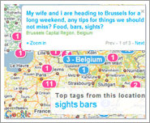
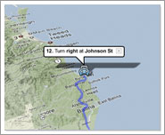
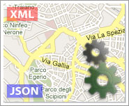

©2010 Google -
Code Home -
Terms of Service -
Privacy Policy -
Site Directory
Google Code offered in:
English -
Español -
日本語 -
한국어 -
Português -
Pусский -
中文(简体) -
中文(繁體)
About Google Maps API
The Maps API is a free service, available for any web site that is free to consumers. Please see the terms of service for more information.
Businesses that charge fees for access, track assets or build internal applications must use Google Maps API Premier, which provides enhanced features, technical support and a service-level agreement.
What's New
Styled Maps in the Static Map API.
Oct 29, 2010Alter the appearance of the standard map styles in the API, customizing the colors and display of features and elements!
Custom Panoramas in the Javascript API
July 21, 2010Create custom panoramas and display them using the Street View service in the Maps Javascript API V3!
FusionTables in the Javascript API
June 21, 2010Documentation on Fusion Table Layers, allowing you to display geographic data on your map!
Google Maps has a wide array of APIs that let you embed the robust functionality and everyday usefulness of Google Maps into your own website and applications, and overlay your own data on top of them:

Maps JavaScript API
Embed a Google Map in your webpage using JavaScript. Manipulate the map and
add content through many services.
Version 3 -
Version 2

Maps API for Flash
Use this ActionScript API to embed a Google Map in your Flash-based web page
or app. Manipulate the Map in three dimensions and add content through many services.
Learn more
Google Earth API
Embed a true 3D digital globe into your web page. Take your visitors anywhere
on the Earth (even below the ocean) without leaving your web page.
Learn more

Static Maps API
Embed a fast and simple Google Maps image in your web page or mobile site without
requiring JavaScript or any dynamic page loading.
Learn more

Web Services
Use URL requests to access geocoding, directions, elevation, and places
information from client applications, and manipulate the results in JSON or XML.
Learn more